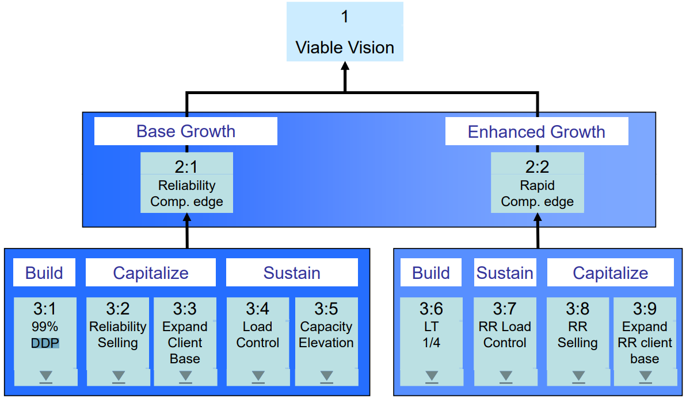

дерево стратегии и тактики надежного быстрого реагирования (reliable rapid response strategy and tactics tree) - (RRR S&T) Дерево стратегии и тактики, разработанное для производителей, которые продают продукты (изделия) другим производителям для использования в их продуктах (изделиях).
Использование: надежное дерево стратегии и тактики быстрого реагирования предназначено для использования в бизнес-среде (Б2Б среде).
См.: дерево стратегии и тактики преобразования.
Примечание ДП: https://public.wsu.edu/~engrmgmt/holt/em534/SandTRRR.pdf

#производство
Синоним: reliable rapid response strategy and tactics tree